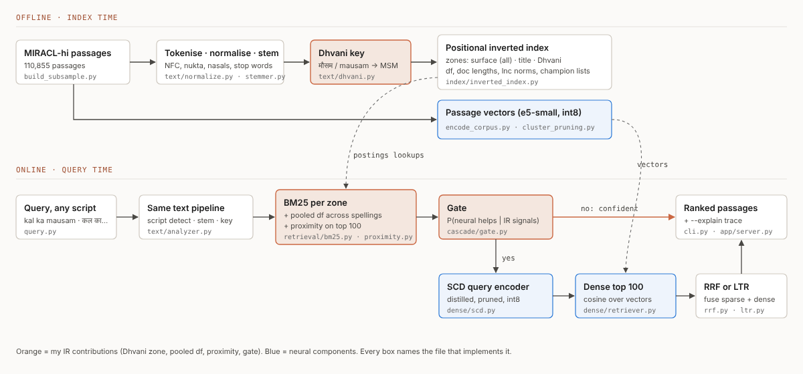
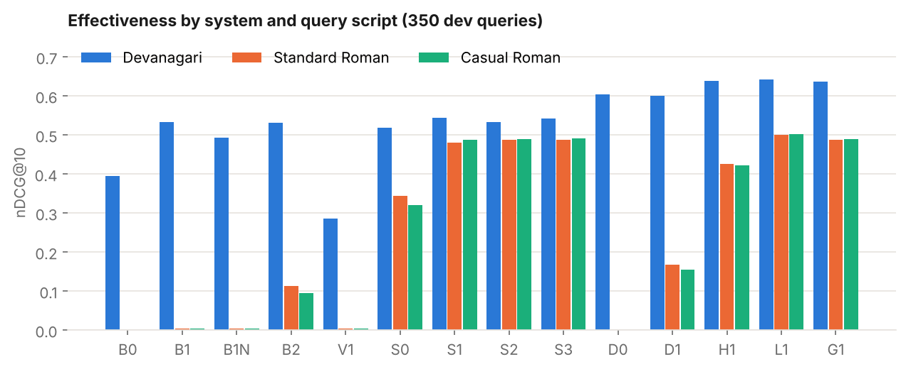
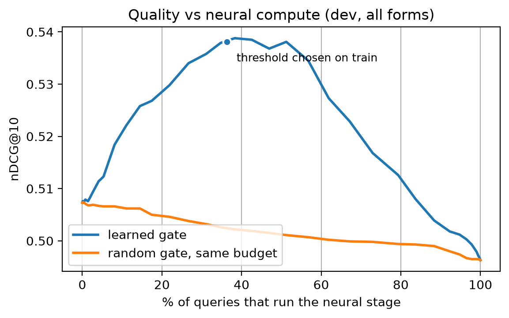
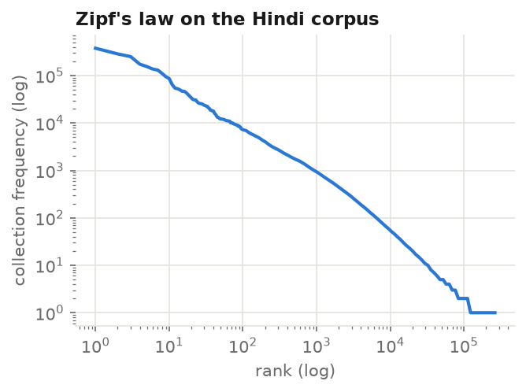
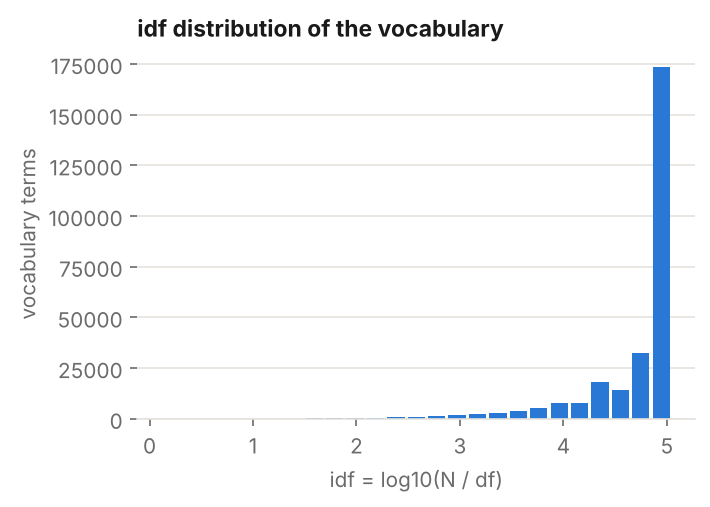
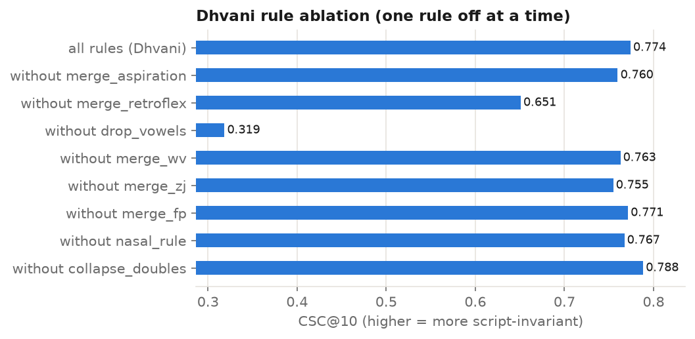

User need. On phones, Hindi is mostly typed in Roman script ("kal ka mausam"), and the same word is spelled in many ways (mausam / mosam / mousam). The content people search (Wikipedia, news, government pages) is mostly in Devanagari ("कल का मौसम"). An inverted index matches exact terms, so these users silently get worse results. The problem is also inside the data itself: 19% of the MIRACL-Hindi passages we index already contain Roman-script words.
Why it belongs to T5. The track asks for search in an Indian language with code-mixed or transliterated queries. Our system touches every IR hook listed for T5: tokenisation and normalisation for Devanagari, a Hindi stemmer compared with no stemming, Soundex-style phonetic matching for transliterated spellings, the behaviour of stop words and idf on a Hindi corpus, and cross-lingual ranking in a vector space.
Papers referred. Mixed-script IR was studied by Gupta et al. (SIGIR 2014) and in the FIRE 2015 MSIR shared task; we use MIRACL (Zhang et al., TACL 2023) for judged Hindi queries. Pooled df follows Pirkola's structured queries (SIGIR 1998); the consistency metric is Rank-Biased Overlap (Webber et al., TOIS 2010); the distillation follows Reimers and Gurevych (EMNLP 2020); the gate follows query performance prediction (NQC, Shtok et al.) and cascade ranking (Wang, Lin and Metzler, SIGIR 2011). Full list in the references.

What is a document. One MIRACL passage is one document (relevance labels are per passage), with zones title and body. We index every passage judged for a dev or train query plus a seeded random sample, 110,855 passages and 8,081,081 tokens in total (scripts/build_subsample.py).
Tokenisation and normalisation (text/tokenize.py, normalize.py). Python's \w does not match Devanagari vowel signs, so a regex tokenizer cuts हिन्दी into three pieces; we tokenise with explicit Unicode ranges instead. Normalisation applies NFC, folds nukta (क़→क), chandrabindu to anusvara, removes zero-width joiners, maps Devanagari digits, rewrites a half nasal before a consonant as an anusvara (हिन्दी = हिंदी), and case-folds Roman text.
Stop words and idf on Hindi (text/stopwords.py, scripts/corpus_stats.py). Hindi stop words are extremely frequent postpositions and auxiliaries: the eight highest-df terms are के, में, है, की, का, और, से, एक. 35 of the 40 highest-df terms are in our stop list (Hindi, Hinglish and English question words included). The corpus follows Zipf's law (appendix), and 151,995 of the 274,129 vocabulary terms occur only once, so most of the vocabulary has a very high idf. Stop words keep their positions so phrase queries keep the right gaps.
Stemming (text/stemmer.py). A light suffix stripper after Ramanathan and Rao (2003) maps लड़का / लड़के / लड़कों to one stem. It raises Devanagari nDCG@10 from 0.492 (no stemming, B1N) to 0.533 (B1).
Dhvani key (text/dhvani.py). A Soundex-style key that works on both scripts: every consonant sound maps to one class, aspirated = unaspirated, retroflex = dental, w = v, z = j, f = ph, a nasal before a consonant becomes N, vowels are dropped except at the start (which also handles Hindi's silent inherent vowel), and repeated classes collapse. Unlike English Soundex the key is not cut to four characters. मौसम, mausam, mosam and mousam all become MSM. Classic Soundex (text/soundex.py) is implemented as a comparison.
Inverted index with zones (index/inverted_index.py). A dictionary plus one postings file packed into numpy arrays, with positions. Zones: all (stemmed title + body), title, dhvani (keys of every word), plus soundex, nostem and raw zones for the baselines. Boolean AND/OR/NOT processes terms in order of increasing df and uses skip pointers; phrase queries use positions (retrieval/boolean.py).
Scoring (retrieval/bm25.py, tfidf.py, proximity.py, topk.py). BM25 per zone, combined with zone weights, accumulated term-at-a-time in one score slot per document, with heap-based top-K. tf-idf lnc.ltc cosine is implemented as the vector-space comparison.
The last term is query-term proximity: the smallest window of Dhvani positions that contains all m matched query words, applied to the top 100. Pooled df: a surface term uses the df of its Dhvani class, i.e. the number of documents containing any spelling of that word (Pirkola's structured query, applied to spelling variants instead of translations). All parameters were tuned on the train split only, with the average nDCG@10 over the three query scripts as the objective: k1 = 0.9, b = 0.5, wdhvani = 2.0, wtitle = 1.0, λ = 2.0. Champion lists (r = 200) are precomputed for the speed experiment.
Dense retrieval (dense/). Passages are encoded once with multilingual-e5-small, exported to ONNX and quantised to int8 (cosine with the fp32 vectors ≈ 0.98). Search is a dot product over the passage vectors, or cluster pruning from the lectures (√N leaders; only the followers of the 8 nearest leaders are scored).
Script-Consistency Distillation (SCD). A student copy of the encoder is trained so that a Roman spelling of a train query lands on the teacher's embedding of the Devanagari query (loss = 1 − cosine). Only the query encoder changes, so the passage vectors are reused. On held-out train queries the cosine between a Roman query and its Devanagari target rises from 0.783 to 0.902. The 250,002-token vocabulary is then pruned to the 43,366 tokens used by the corpus and train queries, and the model is quantised: 448 MB → 37 MB.
Learning to rank (rerank/ltr.py). A logistic regression over IR features of each candidate (BM25 per zone, proximity, tf-idf, dense cosine, reciprocal ranks, a static quality prior g(d) for the first passage of an article, length). Trained on train judgments.
Gated cascade (cascade/gate.py). Features that the sparse stage gives for free (top score, score gap, NQC, share of words matched only through Dhvani, unmatched words, max idf, length, script) predict whether the neural stage will improve nDCG@10. The threshold is chosen on train as the fewest neural calls that keep 99% of the always-neural quality.
The obvious T5 project (and the PDF's own sample idea) is a Hinglish engine that transliterates the query and ranks with BM25; that is our baseline B2. What is different:
| aspect | obvious baseline | LipiSetu |
|---|---|---|
| Evaluation | average nDCG / P@k only | Script Gap, cross-script consistency (RBO@10), worst-script nDCG |
| Roman queries | transliterate the query, then BM25 (B2) | Dhvani zone in the index; no transliteration model |
| df for variants | each spelling has its own df | pooled df across spellings (Pirkola-style) |
| Neural stage | always on, or absent | run only when an IR-signal gate predicts it helps |
| Model size | off-the-shelf encoder | script-consistency distillation + vocabulary pruning + int8 |
| Ranking signals | fixed weights | zone weights tuned on train; learning to rank over IR features |
Prior art, honestly. Mixed-script IR is not new (Gupta et al. 2014; FIRE MSIR) and Indic Soundex variants exist (e.g. libindic). We do not claim to be first. To our knowledge the combination here is new for Hindi on MIRACL: script invariance measured explicitly, a cross-script phonetic zone with pooled df inside a classic BM25 engine with a rule-by-rule ablation, and neural inference gated by IR signals and reported as a quality-versus-compute curve.
Setup. Test: the 350 MIRACL-Hindi dev queries (3,494 judgments, about 2.1 relevant passages per query, so P@10 cannot exceed about 0.2 and nDCG@10 is our main metric). Every query is run in three forms: F1 the original Devanagari, F2 a standard Hinglish romanisation, F3 a casual romanisation with seeded spelling noise (text/romanize.py). Tuning and training use only the 1,169 train queries. Unjudged passages count as non-relevant. Script Gap = nDCG(F1) − nDCG(form); CSC@10 = mean pairwise RBO (p = 0.9) between the top-10 lists of the three forms; worst-script nDCG = mean over queries of the lowest nDCG@10 among the forms.
| system | nDCG@10 Deva | nDCG@10 Roman | nDCG@10 casual | P@5 Deva | R@100 Deva | R@100 casual | |
|---|---|---|---|---|---|---|---|
| B0 | BM25, raw whitespace tokens | 0.395 | 0.000 | 0.000 | 0.173 | 0.785 | 0.006 |
| B1 | BM25 + normalisation + stemming | 0.533 | 0.004 | 0.003 | 0.231 | 0.937 | 0.012 |
| B1N | B1 without stemming | 0.492 | 0.004 | 0.003 | 0.217 | 0.903 | 0.012 |
| B2 | B1 + Roman→Devanagari transliteration | 0.531 | 0.113 | 0.095 | 0.230 | 0.937 | 0.334 |
| V1 | tf-idf lnc.ltc cosine | 0.286 | 0.004 | 0.004 | 0.127 | 0.833 | 0.009 |
| S0 | B1 + classic Soundex zone | 0.518 | 0.344 | 0.320 | 0.219 | 0.915 | 0.698 |
| S1 | B1 + Dhvani zone | 0.544 | 0.481 | 0.488 | 0.239 | 0.933 | 0.865 |
| S2 | S1 + pooled df | 0.533 | 0.487 | 0.490 | 0.234 | 0.926 | 0.865 |
| S3 | S2 + title zone + proximity | 0.543 | 0.488 | 0.491 | 0.246 | 0.932 | 0.865 |
| D0 | dense e5-small (int8) | 0.604 | 0.000 | 0.000 | 0.258 | 0.948 | 0.003 |
| D1 | dense, SCD query encoder | 0.600 | 0.167 | 0.154 | 0.256 | 0.959 | 0.385 |
| H1 | RRF(S3, D1) | 0.639 | 0.427 | 0.423 | 0.280 | 0.981 | 0.861 |
| L1 | learning to rank | 0.643 | 0.500 | 0.501 | 0.290 | 0.993 | 0.897 |
| G1 | gated cascade | 0.636 | 0.487 | 0.490 | 0.278 | 0.973 | 0.870 |
| system | Script Gap Roman | Script Gap casual | CSC@10 (RBO) | worst-script nDCG@10 | |
|---|---|---|---|---|---|
| B0 | BM25, raw whitespace tokens | 0.395 | 0.395 | 0.228 | 0.000 |
| B1 | BM25 + normalisation + stemming | 0.529 | 0.530 | 0.179 | 0.002 |
| B1N | B1 without stemming | 0.488 | 0.489 | 0.179 | 0.003 |
| B2 | B1 + Roman→Devanagari transliteration | 0.418 | 0.436 | 0.244 | 0.066 |
| V1 | tf-idf lnc.ltc cosine | 0.281 | 0.282 | 0.185 | 0.002 |
| S0 | B1 + classic Soundex zone | 0.174 | 0.198 | 0.534 | 0.296 |
| S1 | B1 + Dhvani zone | 0.063 | 0.057 | 0.774 | 0.452 |
| S2 | S1 + pooled df | 0.046 | 0.043 | 0.794 | 0.456 |
| S3 | S2 + title zone + proximity | 0.054 | 0.051 | 0.748 | 0.444 |
| D0 | dense e5-small (int8) | 0.604 | 0.603 | 0.171 | 0.000 |
| D1 | dense, SCD query encoder | 0.433 | 0.445 | 0.303 | 0.124 |
| H1 | RRF(S3, D1) | 0.212 | 0.216 | 0.511 | 0.348 |
| L1 | learning to rank | 0.143 | 0.141 | 0.637 | 0.455 |
| G1 | gated cascade | 0.149 | 0.146 | 0.629 | 0.434 |


The Script Gap is real and large. BM25 with stemming (B1) reaches 0.533 on Devanagari queries and 0.004 on the same questions in Roman script. The obvious fix, transliterating the query (B2), only recovers 0.113 / 0.095 (standard / casual Roman), because casual Hinglish spellings are not valid transliteration input ("bharat" becomes भरत, not भारत). Classic Soundex (S0) helps (0.344) but its 4-character English codes merge too much. The Dhvani zone (S1) reaches 0.481 / 0.488, and with pooled df (S2) the casual-Roman Script Gap falls from 0.436 (B2) to 0.043, while cross-script consistency rises from 0.244 to 0.794. Every one of these Roman-query gains is significant (p < 0.001).
Neural models have their own script problem. The base dense model (D0) is the best single system for Devanagari (0.604) but scores 0.000 on casual Roman: for a Roman query it retrieves other Roman-script passages, i.e. it matches the script before the meaning. Script-consistency distillation (D1) fixes part of this (0.154) at almost no cost on Devanagari (0.600), but stays far below the Dhvani zone on Roman queries. Plain fusion (H1) is best on Devanagari (0.639) but drags Roman queries down to 0.427, so fusion alone is not script-invariant. Learning to rank (L1) uses both signals and is the best system on every script (0.643 / 0.500 / 0.501), with the highest worst-script nDCG (0.455 vs 0.066 for B2).
The gate spends neural compute where it helps. Because the neural stage helps Devanagari queries and hurts many Roman ones, always running it (0.496 over all dev queries and forms) is worse than never running it (0.507). The gate, with its threshold chosen on train, runs the neural stage for 35% of queries and reaches 0.538, better than both extremes and well above a random gate with the same budget (Figure 3; an oracle reaches 0.599 at 32%). The cascade's median latency is 14.5 ms against 32.9 ms for always-hybrid and 46.9 ms for LTR.
tf-idf vs BM25. lnc.ltc (V1) scores 0.286 against 0.533 for BM25. Full cosine normalisation over-rewards short passages: the median length of V1's top passage is 12 terms, against 35 for the corpus and 57 for BM25, whose tuned b = 0.5 normalises length only partly (results/e13_length_bias.json).
Pooled df. On the Devanagari-only corpus pooled df trades a little Devanagari accuracy (0.544 → 0.533) for Roman accuracy and consistency. On the mixed-script corpus, where a word's df really is split between spellings, it helps every form (Table 4): standard Roman 0.314 → 0.358, casual Roman 0.351 → 0.390, consistency 0.346 → 0.408.
Ablation. Dropping vowels is by far the most important Dhvani rule, followed by merging retroflex and dental sounds (Table 3). Collapsing doubled letters slightly hurts; we keep the rule set fixed as designed rather than tune it on the test queries.
| variant | keys | words/key | nDCG Deva | nDCG Roman | nDCG casual | CSC@10 |
|---|---|---|---|---|---|---|
| all rules (Dhvani) | 100,839 | 2.65 | 0.544 | 0.481 | 0.488 | 0.774 |
| without merge_aspiration | 111,942 | 2.39 | 0.547 | 0.494 | 0.479 | 0.760 |
| without merge_retroflex | 111,891 | 2.39 | 0.546 | 0.382 | 0.388 | 0.651 |
| without drop_vowels | 219,235 | 1.23 | 0.518 | 0.166 | 0.123 | 0.319 |
| without merge_wv | 101,689 | 2.63 | 0.544 | 0.481 | 0.480 | 0.763 |
| without merge_zj | 101,232 | 2.64 | 0.544 | 0.479 | 0.482 | 0.755 |
| without merge_fp | 101,841 | 2.62 | 0.544 | 0.480 | 0.486 | 0.771 |
| without nasal_rule | 101,007 | 2.64 | 0.544 | 0.472 | 0.478 | 0.767 |
| without collapse_doubles | 113,486 | 2.36 | 0.542 | 0.484 | 0.488 | 0.788 |
| system | nDCG Deva | nDCG Roman | nDCG casual | |
|---|---|---|---|---|
| B1 | BM25 + normalisation + stemming | 0.416 | 0.201 | 0.150 |
| B2 | B1 + Roman→Devanagari transliteration | 0.415 | 0.106 | 0.089 |
| S1 | B1 + Dhvani zone | 0.460 | 0.314 | 0.351 |
| S2 | S1 + pooled df | 0.465 | 0.358 | 0.390 |
| S3 | S2 + title zone + proximity | 0.464 | 0.332 | 0.375 |
| word | key | df Deva | df Roman | df pooled | idf Deva | idf Roman | idf pooled |
|---|---|---|---|---|---|---|---|
| यंत्र / yantra | YNTR | 319 | 103 | 351 | 5.85 | 6.98 | 5.75 |
| समय / samay | SMY | 6,555 | 2,700 | 9,260 | 2.83 | 3.71 | 2.48 |
| अधिकतम / adhikatam | ADKTM | 331 | 145 | 492 | 5.81 | 6.64 | 5.42 |
| अंतर्गत / antargat | ANTRGT | 3,737 | 1,603 | 5,378 | 3.39 | 4.24 | 3.03 |
| स्थित / sthit | ST | 9,047 | 3,165 | 18,994 | 2.51 | 3.56 | 1.76 |
| संख्या / sankhya | SNKY | 2,036 | 807 | 2,918 | 4.00 | 4.92 | 3.64 |
| वृद्धि / vriddhi | VRD | 957 | 385 | 3,641 | 4.75 | 5.66 | 3.42 |
| शक्ति / shakti | SKT | 1,483 | 473 | 13,896 | 4.31 | 5.46 | 2.08 |
| experiment | variant | median ms | nDCG@10 | comparisons | docs scored | overlap@100 |
|---|---|---|---|---|---|---|
| top-K selection | heap over scored docs (mine) | 4.564 | – | – | – | – |
| top-K selection | full sort of all N scores | 0.687 | – | – | – | – |
| champion lists (S1, r=200) | full postings | 5.748 | 0.5045 | – | – | – |
| champion lists (S1, r=200) | champion lists | 1.17 | 0.3739 | – | – | – |
| AND merge (pairs of dev query terms) | plain merge | – | – | 4606 | – | – |
| AND merge (pairs of dev query terms) | skip pointers (sqrt L) | – | – | 2354 | – | – |
| dense search (D0) | exact (all N vectors) | 10.291 | 0.2013 | – | 110855 | – |
| dense search (D0) | cluster pruning (sqrt N leaders, 8 clusters) | 6.396 | 0.1327 | – | 5491 | 0.5048 |
Skip pointers halve the comparisons of AND merges. Champion lists are about 5x faster but lose a lot of quality, mostly for Roman queries whose Dhvani postings are long. Cluster pruning scores about 5% of the vectors and keeps half of the exact top 100. In pure Python the heap top-K is slower than numpy's C sort even though it is asymptotically better.
Significance. Paired randomisation tests (10,000 permutations, nDCG@10, appendix D) give p < 0.001 for every Roman-query gain listed above (S1 over B1 and S0, S3 over B2, D1 over D0, L1 and G1 over H1) and for H1 over S3 on Devanagari. On Devanagari queries the sparse systems are not significantly different from B1/B2 (no loss), and G1 is not significantly different from the always-hybrid H1, even though it runs the neural stage for only a third of the queries.
Course-project roadmap. (1) Bengali and Telugu from MIRACL with per-language Dhvani tables; (2) a larger human query set and voice queries; (3) the int8 encoder in the browser with ONNX Runtime Web, so search runs fully on the device; (4) learned key rules instead of hand-written ones; (5) a short paper for FIRE.
Devansh Pandey: idea and system design; text pipeline, inverted index, Boolean/phrase, tf-idf, BM25, proximity, top-K and champion lists; the Dhvani key and pooled df; dense retrieval, script-consistency distillation, vocabulary pruning, cluster pruning; learning to rank; the gated cascade; the evaluation framework and metrics; the demo; the report. [Teammate A]: human query annotation and the annotator-agreement analysis. [Teammate B]: human query annotation, final evaluation runs and plots, proofreading. [Update to what actually happened before submitting.]
We used Claude Code (an AI coding assistant by Anthropic) to help brainstorm and plan the project, write and refactor code, write tests and draft documentation. Devansh chose the track and the final idea, directed the work, reviewed the code and checked the results. The human query annotations were written without AI tools. Every number in this report was produced by the scripts in the repository on the real data.
Data: MIRACL (Apache-2.0), passage text from Wikipedia (CC BY-SA 3.0). Model: intfloat/multilingual-e5-small (MIT).
| system | median ms | p95 ms | |
|---|---|---|---|
| B0 | BM25, raw whitespace tokens | 0.8 | 22.3 |
| B1 | BM25 + normalisation + stemming | 0.6 | 8.8 |
| B1N | B1 without stemming | 0.6 | 6.3 |
| B2 | B1 + Roman→Devanagari transliteration | 2.2 | 8.6 |
| V1 | tf-idf lnc.ltc cosine | 0.7 | 8.3 |
| S0 | B1 + classic Soundex zone | 9.5 | 16.5 |
| S1 | B1 + Dhvani zone | 5.7 | 13.4 |
| S2 | S1 + pooled df | 5.5 | 11.7 |
| S3 | S2 + title zone + proximity | 8.7 | 17.3 |
| D0 | dense e5-small (int8) | 18.0 | 31.9 |
| D1 | dense, SCD query encoder | 17.3 | 30.0 |
| H1 | RRF(S3, D1) | 32.9 | 56.0 |
| L1 | learning to rank | 46.9 | 81.6 |
| G1 | gated cascade | 14.5 | 72.5 |
| LTR feature | weight |
|---|---|
| bm25_all | -0.069 |
| bm25_dhvani | +0.895 |
| bm25_title | -0.184 |
| proximity | +0.167 |
| tfidf | +0.280 |
| dense | +1.352 |
| sparse_rr | +0.619 |
| dense_rr | +0.395 |
| lead_passage | +0.020 |
| log_length | +0.114 |
| roman_query | -0.208 |
| gate feature | weight |
|---|---|
| top_score | -0.038 |
| score_gap | -0.329 |
| nqc | +0.106 |
| dhvani_only | -0.288 |
| unmatched | -0.086 |
| max_idf | +0.112 |
| query_length | -0.175 |
| roman_query | -0.192 |
| comparison | form | nDCG A | nDCG B | difference | p-value | p < 0.05 |
|---|---|---|---|---|---|---|
| S1 vs B1 | F1 | 0.544 | 0.533 | +0.011 | 0.2645 | no |
| S1 vs B1 | F2 | 0.481 | 0.004 | +0.477 | 0.0001 | yes |
| S1 vs B1 | F3 | 0.488 | 0.003 | +0.485 | 0.0001 | yes |
| S1 vs S0 | F1 | 0.544 | 0.518 | +0.026 | 0.0033 | yes |
| S1 vs S0 | F2 | 0.481 | 0.344 | +0.137 | 0.0001 | yes |
| S1 vs S0 | F3 | 0.488 | 0.320 | +0.168 | 0.0001 | yes |
| S3 vs B2 | F1 | 0.543 | 0.531 | +0.012 | 0.3246 | no |
| S3 vs B2 | F2 | 0.488 | 0.113 | +0.376 | 0.0001 | yes |
| S3 vs B2 | F3 | 0.491 | 0.095 | +0.396 | 0.0001 | yes |
| S2 vs S1 | F1 | 0.533 | 0.544 | -0.011 | 0.0106 | yes |
| S2 vs S1 | F2 | 0.487 | 0.481 | +0.006 | 0.0082 | yes |
| S2 vs S1 | F3 | 0.490 | 0.488 | +0.002 | 0.1650 | no |
| S3 vs S2 | F1 | 0.543 | 0.533 | +0.009 | 0.2235 | no |
| S3 vs S2 | F2 | 0.488 | 0.487 | +0.001 | 0.7658 | no |
| S3 vs S2 | F3 | 0.491 | 0.490 | +0.001 | 0.7812 | no |
| D1 vs D0 | F1 | 0.600 | 0.604 | -0.004 | 0.4993 | no |
| D1 vs D0 | F2 | 0.167 | 0.000 | +0.167 | 0.0001 | yes |
| D1 vs D0 | F3 | 0.154 | 0.000 | +0.154 | 0.0001 | yes |
| H1 vs S3 | F1 | 0.639 | 0.543 | +0.096 | 0.0001 | yes |
| H1 vs S3 | F2 | 0.427 | 0.488 | -0.061 | 0.0004 | yes |
| H1 vs S3 | F3 | 0.423 | 0.491 | -0.068 | 0.0001 | yes |
| L1 vs H1 | F1 | 0.643 | 0.639 | +0.004 | 0.6535 | no |
| L1 vs H1 | F2 | 0.500 | 0.427 | +0.073 | 0.0001 | yes |
| L1 vs H1 | F3 | 0.501 | 0.423 | +0.079 | 0.0001 | yes |
| G1 vs H1 | F1 | 0.636 | 0.639 | -0.003 | 0.3921 | no |
| G1 vs H1 | F2 | 0.487 | 0.427 | +0.060 | 0.0001 | yes |
| G1 vs H1 | F3 | 0.490 | 0.423 | +0.067 | 0.0001 | yes |
| B1 vs B1N | F1 | 0.533 | 0.492 | +0.041 | 0.0003 | yes |
| B1 vs B1N | F2 | 0.004 | 0.004 | +0.000 | 1.0000 | no |
| B1 vs B1N | F3 | 0.003 | 0.003 | +0.000 | 1.0000 | no |


